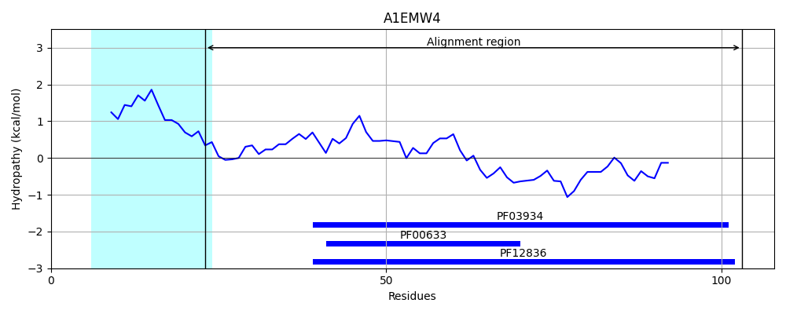
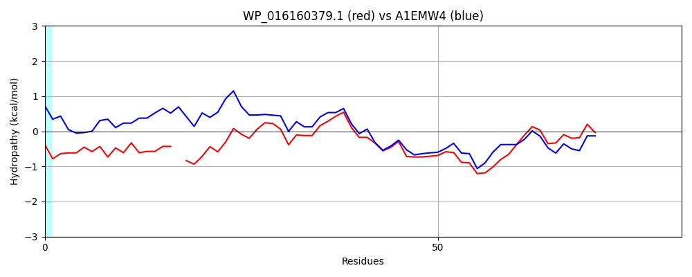

WP_016160379.1
Hit Accession: A1EMW4
Hit TCID: 3.A.11.2.3
Hit Description: gnl|BL_ORD_ID|165 gnl|TC-DB|A1EMW4|3.A.11.2.3 Putative uncharacterized protein - Vibrio cholerae V52.
Mach Len: 81
e:0.000000
Query TMS Count : 1
Hit TMS Count: 1
TMS-Overlap Score: 0.000000
Predicted Substrates:CHEBI:75980;single-stranded DNA polynucleotide
BLAST Alignment:
| Protein Hydropathy Plots: | |
|---|---|
 |  |
Pairwise Alignment-Hydropathy Plot: | |
|  | |